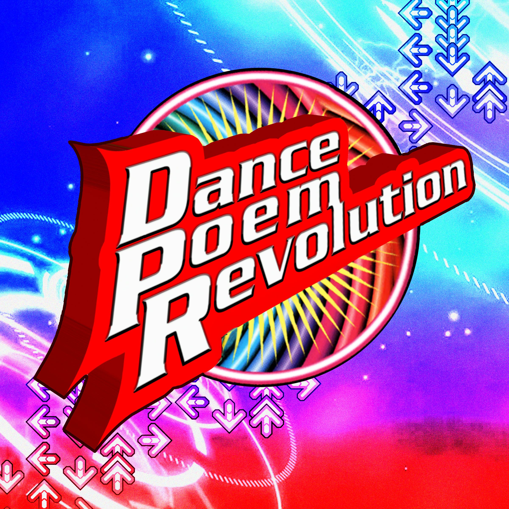
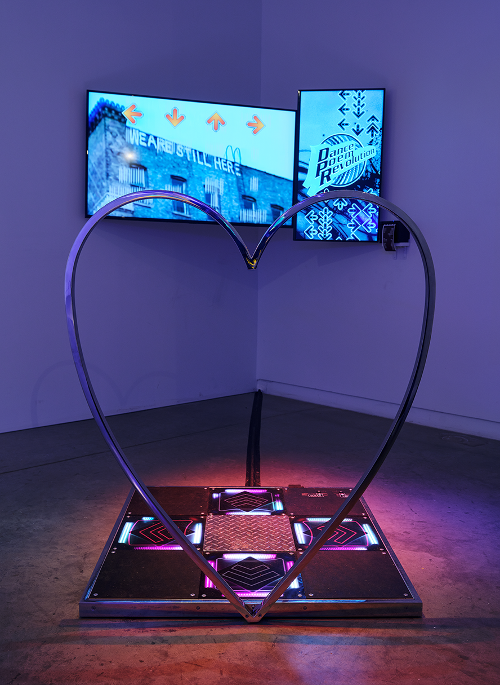
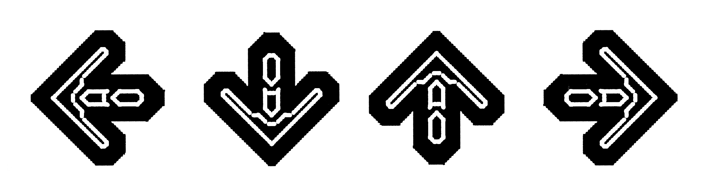

Dance Poem Revolution is an interactive installation where participants generate poems through movement. Using a custom-built system inspired by and reimagined from the popular game Dance Dance Revolution. The piece generates writing sourced from revolutionary texts, songs, and local histories in response to players' steps. The project explores how critical theory can be part of an embodied, poetic, joyful, and communal storytelling. Materials generated through workshops will feed back into the game, adding original text and video sources so that the game is shaped by each place it is installed and those who engage with it.

| Year | 2023-- |
| Medium | Interactive installation |
| Materials | Dance pad, steel, screens, computer, thermal printer, thermal paper |

Dance Poem Revolution is an interactive installation in which participants generate poems through movement, using a custom-built system inspired by and reimagined from the popular game Dance Dance Revolution. The piece generates new writing sourced from revolutionary texts, songs, and local histories in response to players' steps. The project explores how critical theory can operate as embodied, poetic, joyful, and communal storytelling. Materials generated through engagement with the places and contexts the game travels feed back into the system, adding new text and video sources so that each installation extends the work and allows the game to evolve in dialogue with local histories and participants. In this way, the project becomes an evolving archive shaped by movement, where revolution is understood not as a singular narrative or abstract ideal, but as a situated, collective process that is felt, practiced, and rewritten together.


| 2024 | NY Art Book Fair (NYC) ● Brooklyn Art Book Fair (NYC) ● Overkill Festival (Netherlands) ● Wordhack (NYC) ● Black Zine Fair (NYC) |
| 2025 | Working Knowledge Exhibition at the Bromx Museum (NYC) ● RIP Space (LA) |
| 2026 | Culturehub (NYC) ● Ground Loops Exhibition at Feelers Gallery (Singapore) |
In many of the places where the project is installed, I collaborate with local partners to gather revolutionary texts, songs, and histories specific to both the people involved and the installation's context.

